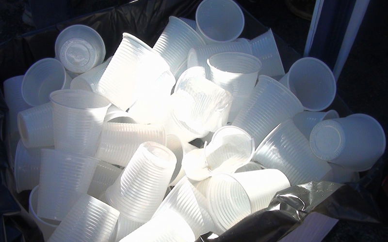
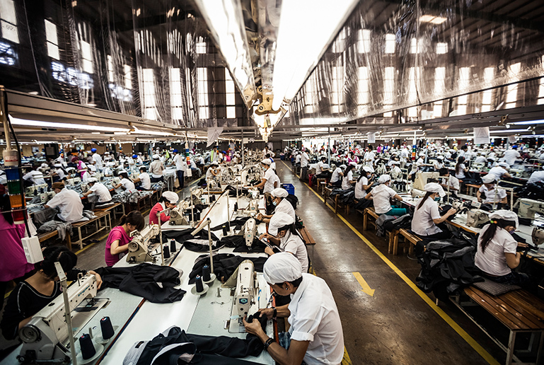

Evitar Descartáveis
Uma empresa com 200 colaboradores gasta em média 60.000 copos descartáveis por ano que acabam no lixo após uma única
utilização. Investir em copos ou garrafas reutilizáveis significa menos desperdício e menos dinheiro a sair da empresa
(para além dos efeitos secundários no bem-estar e produtividade dos colaboradores).

Promover projetos sustentáveis
É importante consciencializar para esta preocupação e comportamentos, dentro e fora da empresa - promover um ambiente organizacional
em prol da ecologia e preservação é essencial, partilhando informação, eventos e formas de envolver todos nesta ideia.
Produzir com consistência
Na fase de produção, há que procurar fontes de energia limpas e renováveis, fornecedores responsáveis e evitar produzir subprodutos
que possam pôr em risco a segurança humana e biodiversidade.
